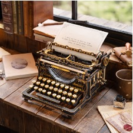
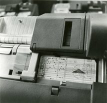

Some history
Long before digital processors existed, humans needed mechanical ways to record and input text efficiently. The earliest input devices relied purely on physical linkages and mechanical force.

The Sholes and Glidden Typewriter (1868)
The QWERTY Layout: Invented by Christopher Latham Sholes
The QWERTY keyboard layout was originally designed to prevent mechanical typewriter arms from jamming by separating commonly used letter pairs.
Legacy: Despite electronic evolution, this exact mechanical key arrangement remains the universal standard for text input today.
The longest word you can type using only the top row of a typewriter is "TYPEWRITER" itself!
Back in the 1870's, when Christopher Latham Sholes and his team were designing the QWERTY keyboard layout, they deliberately placed all the letters required to spell typewriter on the very top row. This allowed early salesmen and demonstrators to type the machine's name blindingly fast with just one swift roll of their fingers to impress potential buyers.
Punched Cards and Early Computing Inputs (1890s - 1950s)
Origins: Herman Hollerith developed a system using punched cardboard cards to process data for the 1890 US Census.

Herman Hollerith’s Tabulating Machine:
Developed for the 1890 US Census, it used cards with punched holes to represent data mechanically or electrically.
Operators used specialized typewriter-like keypunch machines to encode data onto paper cards or continuous paper tapes, feeding them into early mainframe computers like the IBM 701.
Sources
- Article by ethw on Christopher Latham Sholes. link to the article
- Article by IBM on Punched cards. link to the article